Cours
1) du transistor au micro-processeur
a) le transistor
On entend souvent dire qu'"un ordinateur utilise uniquement des "1" et des "0"". Cette affirmation mérite d'être précisée.
À la base de la plupart des composants d'un ordinateur, on retrouve le transistor. Ce composant électronique a été inventé fin 1947 par les Américains John Bardeen, William Shockley et Walter Brattain. L'invention du transistor a été un immense progrès, mais les premiers ordinateurs sont antérieurs à cette invention. En effet, ces premiers ordinateurs, par exemple le Colossus qui date de 1943, étaient conçus à base de tubes électroniques (on parle aussi de tubes à vide) qui, bien que beaucoup plus gros et beaucoup moins fiable que les transistors fonctionnent sur le même principe que ce dernier.
un transistor :

un tube électronique :
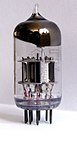
Autre aspect historique qu'il est important de préciser : on ne trouve plus, depuis quelque temps déjà, de transistors en tant que composant électronique discret (comme le transistor de la photo ci-dessus). Dans un ordinateur, les transistors sont regroupés au sein de ce que l'on appelle des circuits intégrés. Dans un circuit intégré, les transistors sont gravés sur des plaques de silicium, les connexions entre les millions de transistors qui composent un circuit intégré sont, elles aussi, gravées directement dans le silicium. Les processus mis en jeu lors de ces gravures dépassent largement le cadre de ce cours, si ce sujet vous intéresse, je vous invite à visionner cette vidéo : https://www.youtube.com/watch?v=NFr-WyytNfo
un circuit intégré :
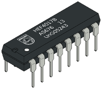
Il n'est pas question de nous pencher en détail sur le fonctionnement d'un transistor, mais vous devez tout de même savoir que dans un ordinateur les transistors se comportent comme des interrupteurs : soit le transistor laisse passer le courant électrique (interrupteur fermé), soit il ne le laisse pas passer (interrupteur ouvert). Et c'est tout, il n'y a pas d'autre état possible pour un transistor dans un ordinateur : le courant passe ou le courant ne passe pas. Globalement l'ordinateur fonctionne uniquement avec deux états. On parle d'un état "haut" et d'un état "bas". On symbolise souvent l'état "haut" par le chiffre "1" et l'état "bas" par le chiffre "0", mais il faut bien avoir conscience qu'il n'y a pas dans un ordinateur des "petits 1" ou des "petits 0" qui se "baladent", c'est juste une histoire de "courant qui passe" ou de "courant qui ne passe pas". On travaille donc uniquement avec 2 chiffres, voilà pourquoi un ordinateur travaille en base 2 (en binaire) et non pas en base 10 comme dans la vie courante.
b) les circuits logiques
Le transistor est l'élément de base des circuits logiques. Un circuit logique permet de réaliser une opération booléenne. Ces opérations booléennes sont directement liées à l'algèbre de Boole (Georges Boole, mathématicien Britanique 1815-1864). L'étude de l'algèbre de Boole dépasse le cadre de ce cours, vous devez juste savoir qu'un circuit logique prend en entrée un ou des signaux électriques (chaque entrée est dans un état "haut" (symbolisé par un "1") ou à un état "bas" (symbolisé par un "0")) et donne en sortie un ou des signaux électriques (chaque sortie est aussi dans un état "haut" ou à un état "bas"). Il existe deux catégories de circuit logique :
-
les circuits combinatoires (les états en sortie dépendent uniquement des états en entrée)
-
les circuits séquentiels (les états en sortie dépendent des états en entrée ainsi que du temps et des états antérieurs)
Dans la suite nous nous intéresserons principalement aux circuits combinatoires.
i) la porte NON (NOT)
Le plus simple des circuits combinatoires est la porte "NON" ("NOT" en anglais) qui inverse l'état en entrée : si l'entrée de la porte est dans un état "bas" alors la sortie sera dans un état "haut" et vice versa. Si on symbolise l'état "haut" par un "1" et l'état "bas" pour un "0", on peut obtenir ce que l'on appelle la table de vérité de la porte "NON" :
| E (Entrée) | S (Sortie) |
|---|---|
| 1 | 0 |
| 0 | 1 |
La porte "NON" est symbolisée par le schéma suivant :
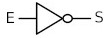
ii) la porte OU (OR)
La porte "OU" a deux entrées (E1 et E2) et une sortie S
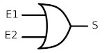
Table de vérité porte "OU" :
| E1 | E2 | S |
|---|---|---|
| 0 | 0 | 0 |
| 0 | 1 | 1 |
| 1 | 0 | 1 |
| 1 | 1 | 1 |
iii) la porte ET (AND)
La porte "ET" ("AND") a deux entrées (E1 et E2) et une sortie S
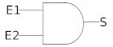
Table de vérité porte "ET" :
| E1 | E2 | S |
|---|---|---|
| 0 | 0 | 0 |
| 0 | 1 | 0 |
| 1 | 0 | 0 |
| 1 | 1 | 1 |
iv) la porte OU EXCLUSIF (XOR)
La porte "OU EXCLUSIF" ("XOR") a deux entrées (E1 et E2) et une sortie S
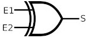
Table de vérité porte "XOR" :
| E1 | E2 | S |
|---|---|---|
| 0 | 0 | 0 |
| 0 | 1 | 1 |
| 1 | 0 | 1 |
| 1 | 1 | 0 |
v) l'additionneur
En combinant les portes logiques, on obtient des circuits plus complexes. Par exemple en combinant 2 portes "OU EXCLUSIF", 2 portes "ET" et une porte "OU" on obtient un additionneur :
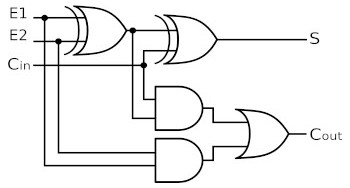
Comme son nom l'indique, l'additionneur permet d'additionner 2 bits (E1 et E2) en tenant compte de la retenue entrante ("Cin" "carry in" en anglais). En sortie on obtient le résultat de l'addition (S) et la retenue sortante ("Cout").
| E1 | E2 | Cin | Cout | S |
|---|---|---|---|---|
| 0 | 0 | 0 | 0 | 0 |
| 0 | 0 | 1 | 0 | 1 |
| 0 | 1 | 0 | 0 | 1 |
| 0 | 1 | 1 | 1 | 0 |
| 1 | 0 | 0 | 0 | 1 |
| 1 | 0 | 1 | 1 | 0 |
| 1 | 1 | 0 | 1 | 0 |
| 1 | 1 | 1 | 1 | 1 |
En combinant plusieurs fois le type de circuit décrit ci-dessus, on obtient des additionneurs capables d'additionner des nombres sur X bits.
Une chose est très importante à bien comprendre : à la base nous avons le transistor, une combinaison de transistor (sous forme de circuit intégré) permet d'obtenir des circuits logiques, la combinaison de circuits logiques permet d'obtenir des circuits plus complexes (exemple : l'additionneur), et ainsi de suite...
Au sommet de cet édifice (on pourrait parler de poupée russe), nous allons trouver la mémoire vive (RAM) et le microprocesseur (CPU).
c) la mémoire vive RAM (Random Acess Memory)
La mémoire vive permet de stocker des données et des programmes. Comme nous l'avons vu, l'ordinateur utilise uniquement 2 états, la mémoire va donc stocker les données sous forme de bits (0 ou 1), mais encore une fois, il ne faut pas s'imaginer que la mémoire est pleine de "petit 0" et de "petit 1", ce sont des "états électriques" qui sont stockés dans cette mémoire.
La mémoire ne gère pas les bits 1 par 1, mais 8 par 8, la mémoire gère donc des octets (rappel : 1 octet = 8 bits)
On peut se représenter la mémoire comme une série de cellules, chaque cellule étant capable de stocker 1 octet. Chacune de ces cellules possède une adresse. Les opérations sur la mémoire sont de 2 types : lecture / écriture. Une opération de lecture consiste à aller lire l'octet situé à l'adresse mémoire XXXXX (ces adresses mémoire étant bien évidemment codées en binaire) et une opération d'écriture consiste à écrire un octet donné à l'adresse mémoire YYYYY. Cette notion d'adresse mémoire est fondamentale, nous aurons l'occasion de revenir dessus un peu plus loin.
Toujours sur l'aspect technologique, 1 bit d'une cellule est l'association d'un transistor et d'un condensateur. Un condensateur est un composant électronique qui peut être soit chargé (on stocke alors un "1"), soit déchargé (on stocke alors un "0"). Un condensateur n'est pas capable de conserver sa charge pendant très longtemps, il doit donc être alimenté électriquement parlant afin de conserver cette charge. Voilà pourquoi la mémoire vive est une mémoire volatile : toutes les données présentes en mémoire sont perdues en cas de coupure de courant. Pour conserver les données une fois l'ordinateur éteint, il faut faire appel à d'autres types de mémoire : les mémoires de stockage. Le disque dur est aujourd'hui la mémoire de stockage la plus utilisé (au moins dans les usages "familiaux"). Un disque dur (HDD : Hard Disk Drive et SSD : Solid State Drive) n'a pas besoin d'alimentation électrique pour conserver les données. À noter que les vitesses d'écriture ou de lecture des données sur un disque dur sont beaucoup plus faibles que les vitesses d'écriture ou de lecture des données en mémoire RAM.
Pour terminer sur cet aspect technologique, il faut noter que l'on trouve aussi des mémoires vives qui stockent l'information grâce à un circuit dit de type "bascule". Ce circuit est une combinaison de plusieurs portes logiques.
circuit de type bascule, permet de stocker 1 bit :
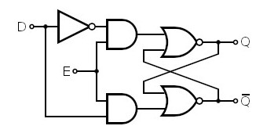
Il n'est pas question pour nous d'étudier ce type de circuit, le schéma ci-dessus vous permet juste de vérifier qu'une fois de plus nous avons bien à faire à une combinaison de porte logique.
N.B. : il existe un autre type de mémoire dans un ordinateur, la mémoire ROM (Read Only Memory) aussi appelée "mémoire morte". Comme son acronyme l'indique, cette mémoire est uniquement utilisable en lecture. Au contraire de la RAM, la ROM n'est pas volatile. Elle est notamment utilisée pour stocker les informations nécessaires au démarrage d’un ordinateur (BIOS).
d) Le microprocesseur CPU (Central Processing Unit)
Le microprocesseur est le "coeur" d'un ordinateur : les instructions sont exécutées au niveau du CPU. Il est schématiquement constitué de 3 parties :
-
les registres permettent de mémoriser de l'information (donnée ou instruction) au sein même du CPU. Leur nombre et leur taille sont variables en fonction du type de microprocesseur. Dans la suite on nommera ces registres R1, R2, R3...
-
l'unité arithmétique et logique (UAL ou ALU en anglais) est chargée de l'exécution de tous les calculs que peut réaliser le microprocesseur. Nous allons retrouver dans cette UAL des circuits comme l'additionneur (voir plus haut)
-
l'unité de commande permet d'exécuter les instructions (les programmes)
un microprocesseur :
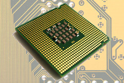
e) Le bus
Les données doivent circuler entre les différentes parties d’un ordinateur, notamment entre la mémoire vive et le CPU. Le système permettant cette circulation est appelé bus. Il existe, sans entrer dans les détails, 3 grands types de bus :
-
Le bus d’adresse permet de faire circuler des adresses (par exemple l’adresse d’une donnée à aller chercher en mémoire)
-
Le bus de données permet de faire circuler des données
-
Le bus de contrôle permet de spécifier le type d’action (exemples : écriture d’une donnée en mémoire, lecture d’une donnée en mémoire).
bus :
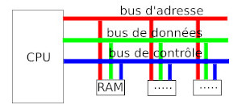
2) initiation à l'assembleur
a) principes
Revenons sur ces instructions aussi appelées "instructions machines" exécutées par l'unité de commande. Comme vous le savez déjà, un ordinateur exécute des programmes qui sont des suites d'instructions. Le CPU est incapable d'exécuter directement des programmes écrits, par exemple, en Python. En effet, comme tous les autres constituants d'un ordinateur, le CPU gère uniquement 2 états (toujours symbolisés par un "1" et un "0"), les instructions exécutées au niveau du CPU sont donc codées en binaire. L'ensemble des instructions exécutables directement par le microprocesseur constitue ce que l'on appelle le "langage machine".
Une instruction machine est une chaîne binaire composée principalement de 2 parties :
-
le champ "code opération" qui indique au processeur le type de traitement à réaliser. Par exemple le code "00100110" donne l'ordre au CPU d'effectuer une multiplication.
-
le champ "opérandes" indique la nature des données sur lesquelles l'opération désignée par le "code opération" doit être effectuée.
instruction machine :
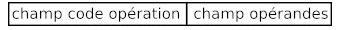
Les instructions machines sont relativement basiques (on parle d'instructions de bas niveau), voici quelques exemples :
-
les instructions arithmétiques (addition, soustraction, multiplication...). Par exemple, on peut avoir une instruction qui ressemble à "additionne la valeur contenue dans le registre R1 et le nombre 789 et range le résultat dans le registre R0" (l'adresse mémoire est donnée en base 10 pour souci de simplicité, n'oubliez pas qu'en interne elle est codée en binaire)
-
les instructions de transfert de données qui permettent de transférer une donnée d'un registre du CPU vers la mémoire vive et vice versa. Par exemple, on peut avoir une instruction qui ressemble à "prendre la valeur située à l'adresse mémoire 487 et la placer dans la registre R2" ou encore "prendre la valeur située dans le registre R1 et la placer à l'adresse mémoire 512"
-
les instructions de rupture de séquence : les instructions machines sont situées en mémoire vive, si, par exemple, l'instruction n°1 est située à l'adresse mémoire 343, l'instruction n°2 sera située à l'adresse mémoire 344, l'instruction n°3 sera située à l'adresse mémoire 345... Au cours de l'exécution d'un programme, le CPU passe d'une instruction à une autre en passant d'une adresse mémoire à l'adresse mémoire immédiatement supérieure : après avoir exécuté l'instruction n°2 (situé à l'adresse mémoire 344), le CPU "va chercher" l'instruction suivante à l'adresse mémoire 344+1=345. Les instructions de rupture de séquence d'exécution encore appelées instructions de saut ou de branchement permettent d'interrompre l'ordre initial sous certaines conditions en passant à une instruction située une adresse mémoire donnée, par exemple, nous pouvons avoir une instruction qui ressemble à cela : imaginons qu'à l'adresse mémoire 354 nous avons l'instruction "si la valeur contenue dans le registre R1 est strictement supérieure à 0 alors exécuter l'instruction située à l'adresse mémoire 4521". Si la valeur contenue dans le registre R1 est strictement supérieure à 0 alors la prochaine instruction à exécuter est l'adresse mémoire 4521, dans le contraire, la prochaine instruction à exécuter est à l'adresse mémoire 355.
Comme déjà dit, les opérandes désignent les données sur lesquelles le code opération de l'instruction doit être réalisée. Un opérande peut être de 3 natures différentes :
1) l'opérande est une valeur immédiate : l'opération est effectuée directement sur la valeur donnée dans l'opérande
2) l'opérande est un registre du CPU : l'opération est effectuée sur la valeur située dans un des registres (R0,R1, R2,...), l'opérande indique de quel registre il s'agit
3) l'opérande est une donnée située en mémoire vive : l'opération est effectuée sur la valeur située en mémoire vive à l'adresse XXXXX. Cette adresse est indiquée dans l'opérande.
Quand on considère l'instruction machine : "additionne le nombre 125 et la valeur située dans le registre R2 , range le résultat dans le registre R1", nous avons 2 valeurs : le "nombre 125" (qui est une valeur immédiate, nous sommes dans le cas n°1) et "la valeur située dans le registre R2" (nous sommes dans le cas n°2)
Quand on considère l'instruction machine : "prendre la valeur située dans le registre R1 et la placer à l'adresse mémoire 512", nous avons 2 valeurs : "à l'adresse mémoire 512" (nous sommes dans le cas n°3) et "la valeur située dans le registre R1" (nous sommes toujours dans le cas n°2)
Évidemment le microprocesseur est incapable d'interpréter la phrase "additionne le nombre 125 et la valeur située dans le registre R2 , range le résultat dans le registre R1" tout cela doit être codé sous forme binaire.
Un programme en langage machine est donc une suite très très longue de "1" et de "0", ce qui vous en conviendrez est quelque peu rébarbatif à programmer : sur les dizaines de milliers de "1" et de "0" qui composent un programme en langage machine de taille modeste, une seule erreur, et votre programme ne fonctionne pas...imaginer la difficulté pour retrouver l'erreur ! Bref programmer en langage machine est extrêmement difficile, pour pallier cette difficulté, les informaticiens ont remplacé les codes binaires abscons par des symboles mnémoniques (plus facile à retenir qu'une suite de "1" et de "0"). Nous avons toujours des instructions machines du genre "additionne le nombre 125 et la valeur située dans le registre R2 , range le résultat dans le registre R1", mais au lieu d'écrire "11100010100000100001000001111101", nous pourrons écrire "ADD R1,R2,#125". Dans les 2 cas, la signification est identique : "additionne le nombre 125 et la valeur située dans le registre R2 , range le résultat dans le registre R1".
Le processeur est uniquement capable d'interpréter le langage machine, un programme appelé "assembleur" assure donc le passage de "ADD R1,R2,#125" à "11100010100000100001000001111101". Par extension, on dit que l'on programme en assembleur quand on écrit des programmes avec ces symboles mnémoniques à la place de suites de "0" et de "1". Aujourd'hui plus personne n'écrit de programme directement en langage machine, en revanche l'écriture de programme en assembleur est encore chose relativement courante.
b) quelques exemples
Il n'est pas question d'apprendre à programmer en assembleur dans ce cours, mais voici tout de même quelques exemples d'instructions en assembleur :
LDR R1,78
Place la valeur stockée à l'adresse mémoire 78 dans le registre R1 (par souci de simplification, nous continuons à utiliser des adresses mémoire codées en base 10)
STR R3,125
Place la valeur stockée dans le registre R3 en mémoire vive à l'adresse 125
ADD R1,R0,#128
Additionne le nombre 128 (une valeur immédiate est identifiée grâce au symbole #) et la valeur stockée dans le registre R0, place le résultat dans le registre R1
ADD R0,R1,R2
Additionne la valeur stockée dans le registre R1 et la valeur stockée dans le registre R2, place le résultat dans le registre R0
SUB R1,R0,#128
Soustrait le nombre 128 de la valeur stockée dans le registre R0, place le résultat dans le registre R1
SUB R0,R1,R2
Soustrait la valeur stockée dans le registre R2 de la valeur stockée dans le registre R1, place le résultat dans le registre R0
MOV R1, #23
Place le nombre 23 dans le registre R1
MOV R0, R3
Place la valeur stockée dans le registre R3 dans le registre R0
B 45
Nous avons une structure de rupture de séquence, la prochaine instruction à exécuter se situe en mémoire vive à l'adresse 45
CMP R0, #23
Compare la valeur stockée dans le registre R0 et le nombre 23. Cette instruction CMP doit précéder une instruction de branchement conditionnel BEQ, BNE, BGT, BLT (voir ci-dessous)
CMP R0, R1
Compare la valeur stockée dans le registre R0 et la valeur stockée dans le registre R1.
CMP R0, #23
BEQ 78
La prochaine instruction à exécuter se situe à l'adresse mémoire 78 si la valeur stockée dans le registre R0 est égale à 23
CMP R0, #23
BNE 78
La prochaine instruction à exécuter se situe à l'adresse mémoire 78 si la valeur stockée dans le registre R0 n'est pas égale à 23
CMP R0, #23
BGT 78
La prochaine instruction à exécuter se situe à l'adresse mémoire 78 si la valeur stockée dans le registre R0 est plus grand que 23
CMP R0, #23
BLT 78
La prochaine instruction à exécuter se situe à l'adresse mémoire 78 si la valeur stockée dans le registre R0 est plus petit que 23
HALT
Arrête l'exécution du programme
Encore une fois, il n'est pas question d'apprendre à programmer en assembleur, les instructions ci-dessus sont uniquement des exemples.
c) utilisation des labels
En faite, les instructions assembleur B, BEQ, BNE, BGT et BLT n'utilisent pas directement l'adresse mémoire de la prochaine instruction à exécuter, mais des "labels". Un label correspond à une adresse en mémoire vive (c'est l'assembleur qui fera la traduction "label"->"adresse mémoire"). L'utilisation d'un label évite donc d'avoir à manipuler des adresses mémoires en binaire ou en hexadécimale. Voici un exemple qui montre comment utiliser un label :
CMP R4, #18
BGT monLabel
MOV R0,#14
HALT
monLabel:
MOV R0,#18
HALT
Dans l'exemple ci-dessus, nous avons choisi "monLabel" comme nom de label. La ligne "MOV R0,#18" a pour label "monLabel" car elle est située juste après la ligne "monLabel:". Concrètement, voici ce qui se passe avec ce programme : si la valeur stockée dans le registre R4 est supérieure à 18 on place le nombre 18 dans le registre R0 sinon on place le nombre 14 dans le registre R0. ATTENTION : la présence du "HALT" juste après la ligne "MOV R0,#14" est indispensable, car sinon, la ligne "MOV R0,#18" sera aussi exécutée (même si la valeur stockée dans le registre R4 est inférieure à 18 )
d) du langage de haut niveau à l'assembleur
Comme dit plus haut, un CPU est uniquement capable d'exécuter des instructions machines. Les instructions des langages de haut niveau comme Python doivent être ""transformées" en langage machine (compilation ou interprétation).
Voici ce que pourrait donner la "transformation" d'un programme Python tout simple en langage machine (plus précisément ici en assembleur).
Voici le programme Python :
x = 4
y = 8
if x == 10:
y = 9
else :
x=x+1
z=6
et voici maintenant voici son équivalent en assembleur :
MOV R0, #4
STR R0,30
MOV R0, #8
STR R0,75
LDR R0,30
CMP R0, #10
BNE else
MOV R0, #9
STR R0,75
B endif
else:
LDR R0,30
ADD R0, R0, #1
STR R0,30
endif:
MOV R0, #6
STR R0,23
HALT
Comme vous pouvez le constater le moindre programme Python donne un programme assembleur relativement complexe.
2) architecture de von Neumann
Comme vous avez pu le constater dans les exemples ci-dessus, les données et les instructions sont stockées en mémoire vive, les données et les instructions se partagent la mémoire vive (il n'y a pas une mémoire pour les instructions et une mémoire différente pour les données). C'est John von Neumann (mathématicien et physicien américano-hongrois 1903-1957) qui a eu l'idée en 1945 d'utiliser une structure de stockage unique pour les données et les instructions, voilà pourquoi on parle d'architecture de von Neumann. Voici un schéma qui représente ce modèle de von Neumann :
modèle de von Neumann d'après le site https://interstices.info/ :
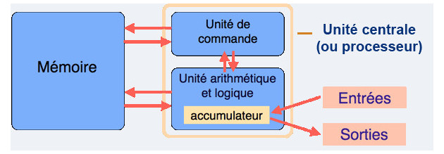
Sur ce schéma, nous avons :
-
La mémoire qui correspond à la RAM vue ci-dessus
-
L'unité arithmétique et logique qui correspond à l'UAL vu ci-dessus (l'accumulateur est un registre permettant de stocker les résultats intermédiaires lors d'un calcul)
-
L'unité de commande qui gère l'exécution des instructions machines (voir ci-dessus). À noter que cette unité de commande est aussi parfois appelée "unité de contrôle"
-
Le système "entrée-sortie" qui permet de communiquer avec "le monde extérieur" au système CPU+RAM (clavier, souris, écran, carte graphique, disque dur...)
Encore aujourd'hui, tous les ordinateurs fonctionnent sur ce principe défini par von Neumann. À noter que John von Neumann était un véritable génie "touche à tout" puisqu'il a laissé son nom dans l'histoire de la mécanique quantique, dans l'histoire de la théorie des ensembles...et comme nous venons de le voir, dans l'histoire de l'informatique. Il a aussi participé à l'élaboration de la bombe atomique américaine lors de la 2e guerre mondiale (projet Manhattan).
Pendant des années, pour augmenter les performances des ordinateurs, les constructeurs augmentaient la fréquence d'horloge des microprocesseurs : la fréquence d'horloge d'un microprocesseur est liée à sa capacité d'exécuter un nombre plus ou moins important d'instructions machines par seconde. Plus la fréquence d'horloge du CPU est élevée, plus ce CPU est capable d'exécuter un grand nombre d'instructions machines par seconde (en fait, c'est un peu plus compliqué que cela, mais nous nous contenterons de cette explication).
évolution de la fréquence d'horloge du CPU dans le temps :
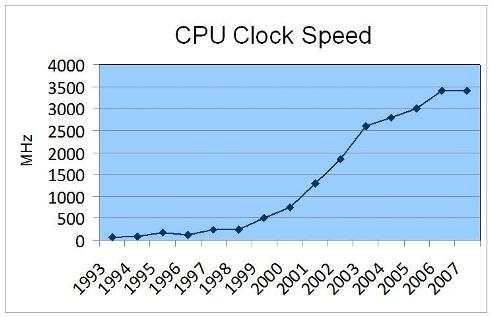
Comme vous pouvez le remarquer sur le graphique ci-dessus, à partir de 2006 environ, la fréquence d'horloge a cessé d'augmenter, pourquoi ? À cause d'une contrainte physique : en effet plus on augmente la fréquence d'horloge d'un CPU, plus ce dernier chauffe. Il devenait difficile de refroidir le CPU, les constructeurs de microprocesseurs (principalement Intel et AMD) ont décidé d'arrêter la course à l'augmentation de la fréquence d'horloge, ils ont décidé d'adopter une nouvelle tactique.
Il n'est plus vraiment possible d'augmenter les performances en augmentant la fréquence d'horloge des CPU, et bien augmentons le nombre de coeurs présent sur un CPU ! Mais qu'est qu'un coeur dans un microprocesseur ? Dans un microprocesseur, un coeur est principalement composé : d'une UAL, de registres (R0, R1...) et d'une unité de commande, un coeur est donc capable d'exécuter des programmes de façon autonome. La technologie permettant de graver toujours plus de transistors sur une surface donnée, il est donc possible, sur une même puce, d'avoir plusieurs coeurs, alors qu'auparavant on trouvait un seul coeur dans un CPU. Cette technologie a été implémentée dans les ordinateurs grand public à partir de 2006. Aujourd'hui (en 2019) on trouve sur le marché des CPU possédant jusqu'à 18 coeurs ! Même les smartphones possèdent des microprocesseurs multicoeurs : le Snapdragon 845 possède 8 coeurs.
On pourrait se dire que l'augmentation du nombre de coeurs entraîne obligatoirement une augmentation des performances du CPU, en faite, c'est plus que complexe que cela : pour une application qui n'aura pas été conçue pour fonctionner avec un microprocesseur multicoeur, le gain de performance sera très faible, voir même nul. En effet, la conception d'applications capables de tirer profit d'un CPU multicoeur demande la mise en place de certaines techniques de programmation (techniques de programmation qui ne seront pas abordées ici). Il faut aussi avoir conscience que les différents coeurs d'un CPU doivent se "partager" l'accès à la mémoire vive : quand un coeur travaille sur une certaine zone de la RAM, cette même zone n'est pas accessible aux autres coeurs, ce qui, bien évidemment va brider les performances. De plus, on trouve à l'intérieur des microprocesseurs de la mémoire "ultrarapide" appelée mémoire cache (il ne faut pas confondre mémoire cache et registres). Le CPU peut stocker certaines données dans cette mémoire cache afin de pouvoir y accéder très rapidement dans le futur, en effet, l'accès à la mémoire cache est beaucoup plus rapide que l'accès à la RAM. La mémoire cache ayant un coup assez important, la quantité présente au sein d'un CPU est assez limitée, les différents coeurs vont donc devoir se partager cette mémoire cache, ce qui peut aussi provoquer des ralentissements (en faite il existe plusieurs types de mémoire cache appelés L1, L2 et L3, chaque coeur possède son propre cache L1, alors que les caches L2 et L3 sont partagés par les différents coeurs).